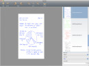
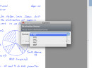

<ul class="screen" ><li><a class="left" href="#" target="_blank"></a></li><li class="view"><ul class="images"><li><a href="../../media/gallery/macosx/mainOSX10.5.png" target="_blank" title=""></a></li><li><a href="../../media/gallery/macosx/exportOSX10.5.png" target="_blank" title=""></a></li><li><a href="../../media/gallery/macosx/aboutOSX10.5.png" target="_blank" title=""></a></li></ul></li><li><a class="right" href="#" target="_blank"></a></li></ul>